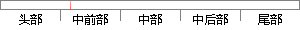

另外，经常用到的方法还有决策树，支持向量机（Support Vector Machine, SVM）以及贝叶斯分类方法等。
片段位置图

相似结果|
相似片段 1：支持向量机在大类别数分类中的应用 . 结合二叉决策树的基本思想提出一种基于支持向量机 ( suppOrt vectOr machine, SVM)的大类别数分类解决方法 ,即 SVM 决策树方法
|
※ 片段修改建议 ※
近似词参考：- 另外：别的 此外
- 经常：常常 每每 时常
- 常用：经常使用
- 方法：方式 要领 法子
- 还有：另有
- 支持：撑持 支撑
- 以及：和
- 方法：方式 要领 法子
系统自动生成语句：别的，常常用到的方式另有决策树，撑持向量机（Support Vector Machine, SVM）和贝叶斯分类方式等。
注：本片段修改建议为系统自动生成，仅供参考。